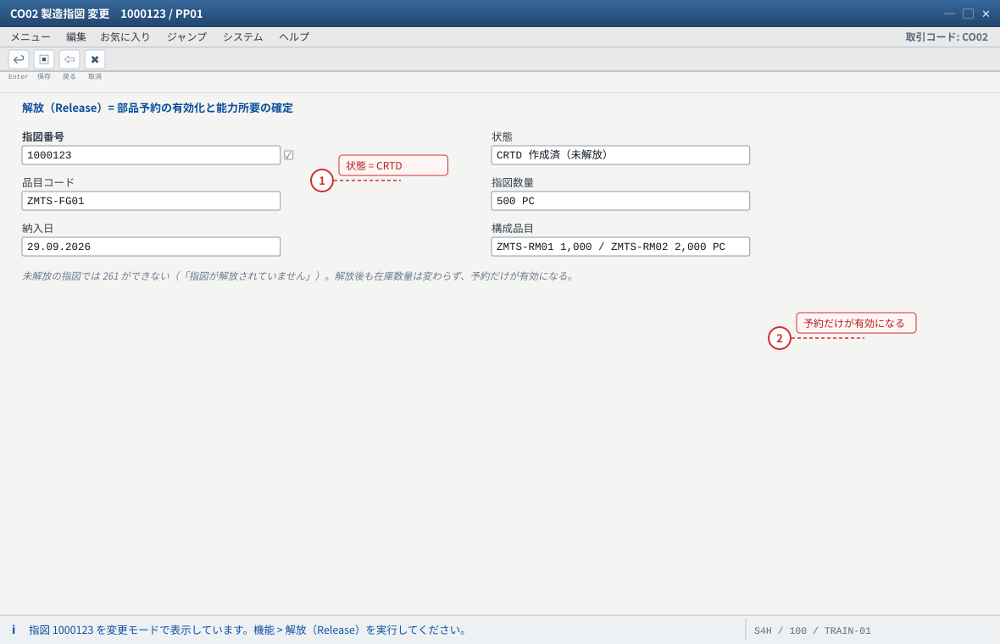
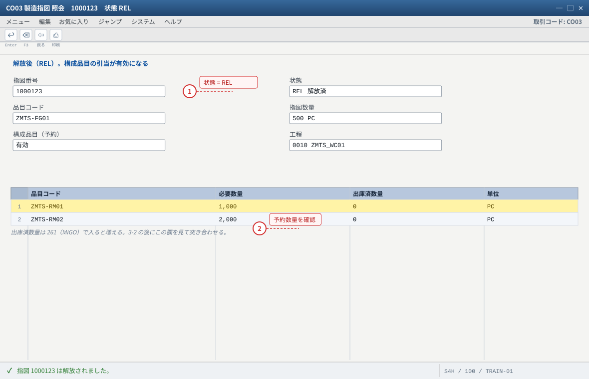
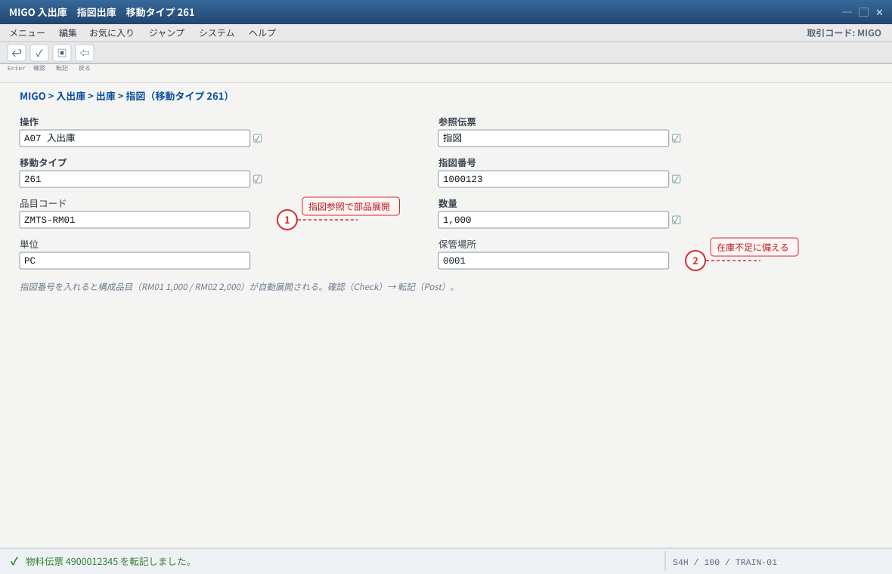
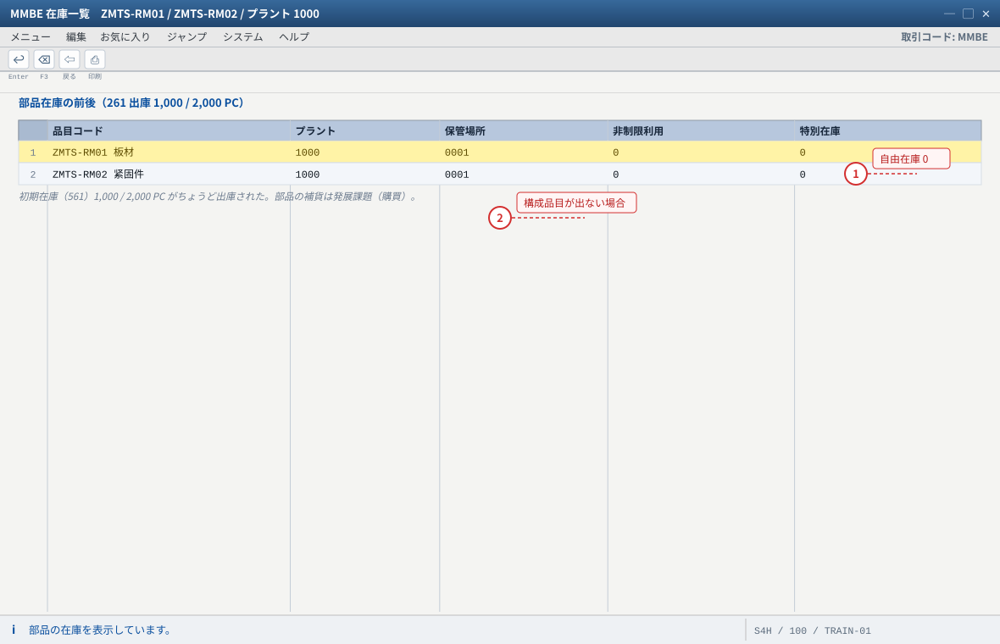
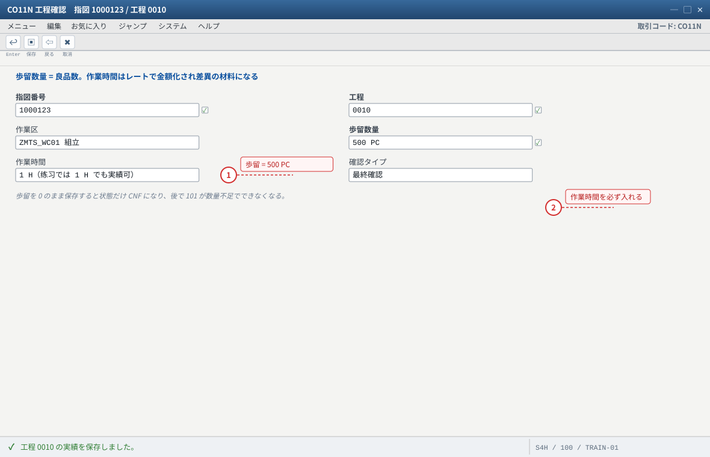
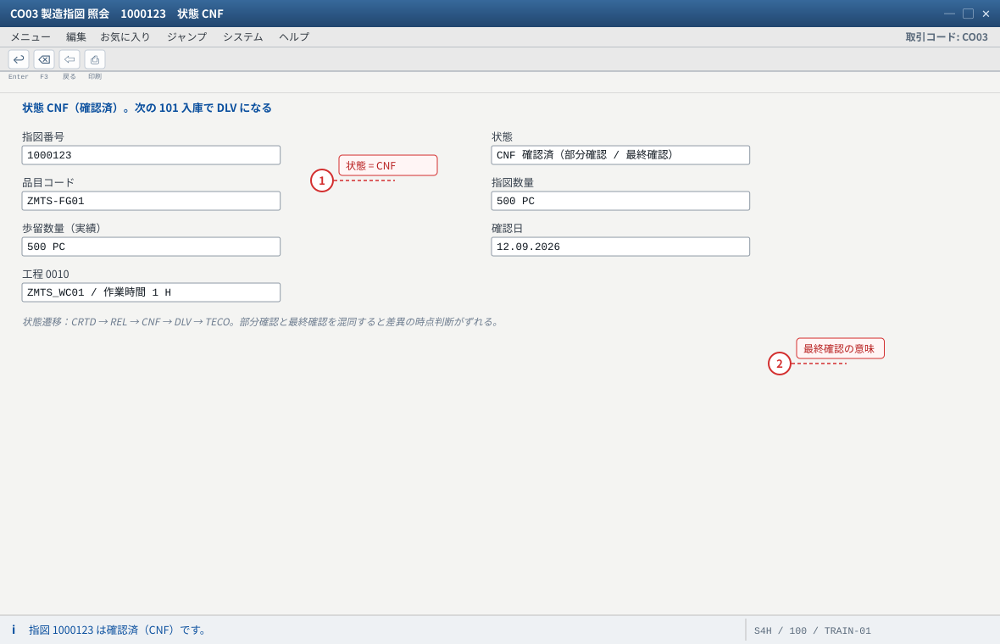
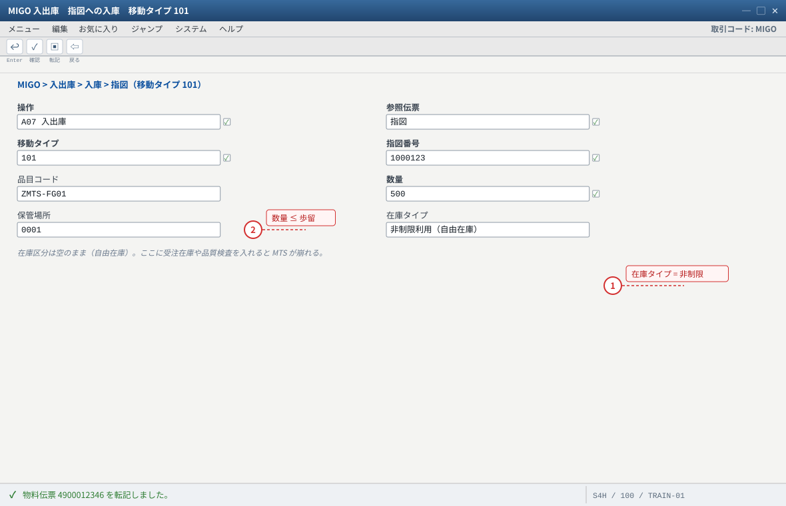
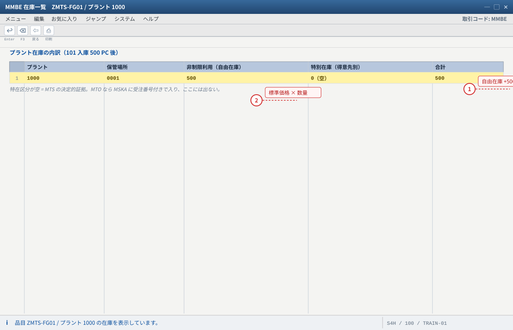
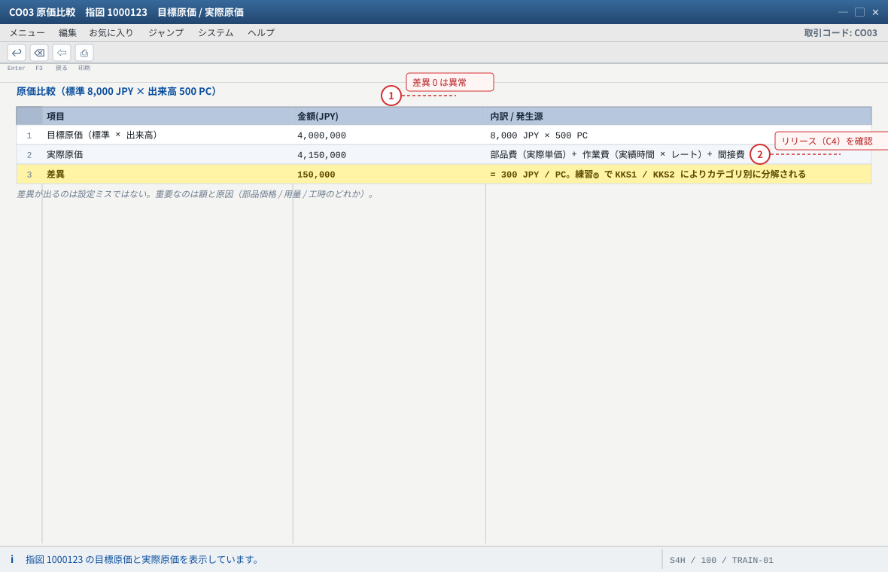

练习③ 製造と入庫（261 → CO11N → 101 → 自由在庫）
.png 放进 assets/gui/ 后执行 python3 tools/swap_gui_images.py <site> --apply 即可一键替换。本练习是 MTS 与 MTO 差别最容易「看见」的地方：入库完成后，产品跑到自由在庫（プラント在庫）而不是受注在庫。MMBE 的金额栏、特在区分栏就是你判断「这个系统到底是 MTS 还是 MTO」的现场证据。
REL
部品出庫
歩留 500
自由在庫 +500
特在区分 空
3-1 指図の解放（CO02）
未解放（CRTD）的指图不能出库、不能实绩。解放的动作同时会做两件事：① 部品预约（RESB）生效 → 库存对部品「预留」；② 排程/能力需求确定。
| 項目 | 値 | 見る画面 |
|---|---|---|
| 指図番号 / タイプ | 练习② で作った指図 / PP01 | CO03 ヘッダ |
| 状態 | CRTD → REL | CO03 ヘッダのシステム状態 |
| 構成品目（部品予約） | ZMTS-RM01 1,000 PC / ZMTS-RM02 2,000 PC | CO03 → 構成品目 / RESB |
CO03→ 指図 → ヘッダで明細と納入日を確認（状態CRTD）。CO02→ 同上の指図 → メニュー「機能 > 解放（Release）」（或は変更画面のヘッダ機能）→ 保存。CO03で状態がREL（解放済）になったことを確認。- （練習用オプション）
CO02→ 明細の「指図数量」を変更できることを確認（不用现在改）。
CO03 の状態。表なら SE16N: AUFK-STAT（或は SE16N: JEST でステータス詳細）与 SE16N: RESB（解放後に予約が有効化される）。② 解放後も部品予約の数量が 0 → BOM の有効日 or 工程割当（C3）。
③ 状態が
REL にならない → ユーザ権限、或は指図タイプの解放範囲設定（OPJH/OPL8）。MMBE の部品在庫表示が変わらないのに、MD04（部品側）の「予約（引当）」が増えることを確認する。—— 在库数量与预留（预约）是两件事，这是后面 ATP 与缺料报警的基础。
- 1 状態 CRTD では出庫できない。解放が 3-2 / 3-3 の前提
- 2 解放する前後で MMBE の部品在庫は変わらないが、MD04 の予約（引当）は増える
自システムでの確認：SE16N: AUFK-STAT / JEST（ステータス詳細）、解放後は SE16N: RESB で予約が有効化されます。

- 1 状態が REL になったことを自分の目で確認する（ここを見ずに 261 へ進むと失敗する）
- 2 解放後も予約数量が 0 のときは BOM の有効日か工程割当（C3）を疑う
自システムでの確認：MMBE の部品在庫は変わらないのに、MD04（部品側）の予約（引当）が増えることを確かめてください。
3-2 部品出庫 261（MIGO）
| 項目 | 値 | 説明 |
|---|---|---|
| トランザクション / 移動タイプ | MIGO > 入出庫 > 出庫 > 指図、移動タイプ 261 | MB1A（旧）でも同じ |
| 指図番号 | 练习②/3-1 の指図 | 入力すると構成品目が自動展開される |
| 出庫数量 | RM01 1,000 PC / RM02 2,000 PC | 必要量と実出庫（MENGE / ENMNG）を確認 |
| 保管場所 | 0001 | 部品の在庫場所 |
| バックフラッシュ | 品目 MRP1 の設定に従う | ON なら CO11N の実績時に自動出庫される（手動 261 は不要） |
CO03で構成品目の必要量を確認（RM01 1,000 / RM02 2,000）。MIGO→ 指図出庫（261）→ 指図番号を入力 → 構成品目の数量を確認 → 「確認（Check）」→「転記（Post）」。- 転記メッセージの物料伝票番号（
MATDOC）を記録。 MMBEで部品在庫が減っていること（1,000 → 0、2,000 → 0 等）を確認。- 指図側で「指図への出庫（実績）」が計上されたことを
CO03→ 明細 → 「実際原価」/構成品目の実績で確認。
MMBE / MB52（部品の自由在庫が減少）。② 物料伝票：S/4HANA では
SE16N: MATDOC（移動タイプ 261、指図参照 AUFNR）に一本化（ECC の MKPF＋MSEG に相当）。③ 指図の実績：
CO03 → 構成品目（引当数 ENMNG と実出庫）。② 構成品目が出ない → BOM の有効日、或は指図作成後に BOM を変えた（コピー済みの構成品目は変わらない）。
③ バックフラッシュ設定の品目で手動 261 をすると二重出庫 →
MM03 MRP1 のバックフラッシュを確認。④ 出庫したのに指図の実績が見えない → 転記前（Check 止まり）或は別の指図に行った。
CO03 の構成品目と CS03 の BOM を見比べて説明する。
- 1 指図番号を入れると部品が自動展開される。数量は BOM の倍数（RM01 1,000 / RM02 2,000）
- 2 在庫不足なら「数量が在庫を超えています」。C1 の 561 初期在庫を追加する
自システムでの確認：SE16N: MATDOC（移動タイプ 261・指図参照）。バックフラッシュ ON の品目は CO11N で自動出庫されるため手動 261 と二重にならないよう注意。

- 1 部品が 0 になったことを確認してから実績・入庫へ進む（ここが欠品判定の基礎）
- 2 構成品目が出ないときは BOM の有効日か、指図作成後に BOM を変えたかを疑う
自システムでの確認：MB52（保管場所別）と SE16N: MATDOC（261 / 指図参照 AUFNR）。
3-3 実績（CO11N）
| 項目 | 値 | 説明 |
|---|---|---|
| T-code | CO11N（単品目・時間単位）/ CO15 / 一括は CO12 | 時短のため CO11N 一本で |
| 指図 / 工程 | 指図番号 / 工程 0010 | — |
| 歩留数量（Yield） | 500 PC | 良品数。スクラップを出したら数量を分けて入力 |
| 作業時間 | 実測（例 1 H/PC × 500 = 500 H。練習では 1 H でも実績可） | KP26 のレートで金額化 → 差異の材料になる |
| バックフラッシュ | ON なら同時に部品が出庫される | 手動 261 と二重にならないよう注意 |
CO11N→ 指図番号 / 工程0010→ 歩留数量500、作業時間を入力 → 保存。CO03→ ヘッダの状態がCNF（確認済）になることを確認。CO03→ 明細 → 「実際原価（Actual Costs）」或は「コンポーネント/作業」で、実績が計上されたことを確認。- （差分の練習）歩留を 490 にして 10 PC を不良扱いすると、差異の数字がどうなるかを見る（本练习用に 1 件だけ作るのがおすすめ）。
CO03 の状態（CNF）・実際原価。表：SE16N: AFRU（実績明細：歩留 LMNGA / 不良 XMNGA / 作業時間 ISMNW）。部品を 261 で手動出庫した場合、
AFRU の歩留と MATDOC の出庫数量は別々に記録される（両方を突き合わせるのが実績の確認）。CNF になり、後で入庫 101 が数量不足でできない。② 作業時間を入れない → 作業費の差異が「全部の作業費」になる（比較の意味がなくなる）。
③ 「部分確認」と「最終確認」の区別：最終確認で状態が
CNF、入庫 101 で DLV。混同すると差异的时点判断がずれる。CO03 の実績数量と（练习⑤ で）差異の数字を比べる。「スクラップはどこで捕まえるか」の答え：入庫数量が減る（101 で 490）＋差異カテゴリに出る。
- 1 歩留数量 500 がそのまま 3-4 の入庫上限になる（歩留を超えて入庫はできない）
- 2 作業時間を入れないと作業費の差異が「全部の作業費」になり比較の意味がなくなる
自システムでの確認：CO03 の状態（CNF）と実際原価、SE16N: AFRU（歩留 LMNGA / 作業時間 ISMNW）。手動 261 の出庫数量は MATDOC 側に別記録されます。

- 1 CNF になっていることを確認してから 101 入庫へ。CRTD のままなら解放か保存を忘れている
- 2 「部分確認」と「最終確認」の区別。最終確認で状態が CNF、入庫 101 で DLV になる
自システムでの確認：CO03 → 明細 →「実際原価」で実績が計上されていること。不良を出す練習では歩留 490 にして差異の変化を見ます。
3-4 完成品入庫 101（MIGO → 自由在庫）
| 項目 | 値 | 説明 |
|---|---|---|
| T-code / 移動タイプ | MIGO > 入出庫 > 入庫 > 指図、移動タイプ 101（MB31 も可） | 指図への入庫 |
| 入庫数量 | 500 PC | 歩留数量を超えて入庫はできない |
| 在庫区分 | 空（自由在庫 / プラント在庫） | MTS の決定的証拠。MTO なら特在区分 E |
| 保管場所 | 0001 | 自由在庫はプラント + 保管場所に帰属 |
| 会計連携 | 標準価格 × 数量（例 8,000 × 500 = 4,000,000 JPY） | FI の在庫勘定（OBYC: BSX）と指図の貸方 |
MIGO→ 入庫 > 指図（101）→ 指図番号・品目ZMTS-FG01・数量500・保管場所0001→ Check → 転記。MMBE→ZMTS-FG01/ プラント1000：非制限利用（自由在庫）= 500 PC、特別在庫（得意先別）は空であることを確認。MB52でも同じ行が見えること（プラント横断の一覧）。CO03→ 指図状態がDLV（入庫完了）になることを確認。FB03で 101 の会計伝票（在庫勘定 / 指図への入庫）を確認——金額が標準価格ベースであることが MTS の要点。
MMBE／MB52（自由在庫 500 / 特在空）、表は SE16N: MARD（品目/プラント/保管場所の非制限在庫 LABST）。対照：MTO なら MSKA に受注番号付きで入る。② 物料伝票：
SE16N: MATDOC（101、指図参照）。③ 会計：
FB03（在庫勘定の借方 / 指図の貸方。勘定は OBYC: BSX の評価クラス別設定）。AFPO-KDAUF を確認。② 特定在庫（ブロック在庫/品質検査在庫）に入った → 入庫時に在庫タイプを指定している（
101 なのに画面で「品質検査」等を選んだ）。③ 入庫できない（歩留不足） →
CO11N の歩留数量不足、或は既に入庫済み（二重入庫は不可、超過入庫の設定次第）。④ 在庫は増えたのに金額が 0 → 品目 会計1 の標準価格未リリース（C4）。
MMBE の画面を「数量」と「金額」の両方で見て、自由在庫の金額 = 標準価格 × 数量であることを確かめる。次に姊妹站 sapmto の同场景（MTO）と比べ、この行が受注在庫側に現れることを読み比べる。
- 1 在庫タイプは非制限利用（自由在庫）のまま。品質検査/ブロックを選ぶと特定在庫に入る
- 2 歩留数量を超えて入庫はできない（歩留 490 なら 101 も最大 490）
自システムでの確認：SE16N: MATDOC（101・指図参照）、FB03（在庫勘定 / 指図への入庫）。金額は標準価格 × 数量 = 8,000 × 500 = 4,000,000 JPY。

- 1 自由在庫 500 PC に入った = 誰でも使える在庫。MTS の核心
- 2 金額欄で見ると 500 × 8,000 = 4,000,000 JPY（標準価格ベース）
自システムでの確認：SE16N: MARD（LABST = 非制限在庫）、対照で MTO は MSKA。MB52 でも同じ行が見えます。
3-5 標準原価との差異（「此处的金额」问题）
入库记的是标准价，但实际花掉的钱是「部品实际价 + 实际工时 × 实际费率」。两者之差不是错误，而是要由差异计算来处理的信号（练习⑤）。本练习先建立「差在哪里、差多少」的直觉。
标准（目標原価）= 8,000 × 500 = 4,000,000 JPY 実際原価の内訳（例） 部品: RM01 1,000 PC × 実際単価 + RM02 2,000 PC × 実際単価 作業: 実績時間 × レート 間接費: 原価計算バリアントの設定による → 実際 4,150,000 JPY なら 差異 = 150,000 JPY（= 300 JPY/PC） 差異の「見え方」は 2 か所 ① 指図単位（CO03 の実際原価 vs 目標原価） ← 練習で見る場所 ② 品目/期間単位（KKS1 → KO88 で FI へ） ← 練習⑤ で見る場所
CO03→ 明細 → 「実際原価 / 目標原価」の比較画面（或は「原価分析」）を開く。- 標準（目標）と実際の差額を記録する。
- 部品の実際単価を確認したい場合は、部品の 101 入庫時の価格（
MBEW或はMATDOC）を見る——練習環境では 561 の初期在庫価格がそのまま使われることが多い。
CO03 の原価比較（目標/実際）。品目の標準価格は MM03 会計1 / SE16N: MBEW-STPRS。差異の具体カテゴリは
KKS1/KKS2 を実行した後の差異分析で見る（练习⑤）。カテゴリの定義は SAP Help Variance Categories。② 差異が 0 に見える → 目標原価が未計算（
CK11N 未実施 / 会計1 の標準価格なし）或は実績未入力。③ 差異を月末まで放置 →
KKS1 を実行しても「目標原価が無い」と言われる（標準価格未リリース）。CO03 の原価比較から推定して書く。—— これが练习⑤ で差異カテゴリを読むときの予習になる。
- 1 差異が 0 に見えるときは目標原価が未計算（CK11N 未実施 / 標準価格なし）or 実績未入力を疑う
- 2 差異を月末まで放置すると、KKS1 で「目標原価が無い」と言われる（標準価格未リリース）
自システムでの確認：品目の標準価格は MM03 会計1 / SE16N: MBEW-STPRS。差異カテゴリは KKS1・KKS2 実行後に見ます（练习⑤）。
期待结果汇总（本练习做完时的系统状态）
| # | 期待结果 | 確認方法 |
|---|---|---|
| 1 | 指図が REL に解放され、部品予約が有効 | CO03・RESB |
| 2 | 261 で部品が出庫され、部品在庫が減少（RM01 1,000 / RM02 2,000 PC） | MMBE・MATDOC |
| 3 | CO11N で歩留 500 PC を実績、指図状態 CNF | CO03・AFRU |
| 4 | 101 で完成品 500 PC 入庫、自由在庫（非制限利用）に +500、特在区分は空 | MMBE・MB52・MARD |
| 5 | 指図状態が DLV、会計伝票が標準価格ベースで生成 | CO03・FB03 |
| 6 | 受注在庫（MSKA）には何も入っていない | SE16N: MSKA |
つまずきと対処（本练习版）
| 症状 | 根因の候補 | 確認手順 |
|---|---|---|
| 261 で「指図が解放されていない」 | 状態 CRTD | CO03 → CO02 で解放 |
| 261 で「在庫不足」 | 部品の初期在庫不足 | MMBE → MIGO 561 で補充 |
| 入庫が特定在庫に入る | 入庫画面で在庫タイプを変えている | MIGO の画面（在庫タイプ欄） |
| 入庫が「得意先別」に出る | 品目が MTO 化（MRP4 個別所要量 / 受注参照） | MM03 MRP4・AFPO-KDAUF・MMBE |
CO11N 後も状態が CRTD | 解放していない、或は保存していない | CO03 の状態 |
| 在庫金額が 0 / 異常 | 標準価格未リリース、評価クラス不正 | MM03 会計1・OBYC |
| 差異が想定外に大きい | 実績時間の入力ミス・部品の実際単価が違う | CO03 原価比較・AFRU・MATDOC |
验收（完成基准）
- 指図を
CO02で解放し、状態がRELになったことを確認した。 - 261 で部品（RM01 1,000 / RM02 2,000 PC）を出库し、部品在庫が減ったことを
MMBEで確認した。 CO11Nで歩留 500 PC を実績し、AFRU或はCO03で実績数量を確認した。- 101 で完成品 500 PC を入庫し、
MMBE・MB52で自由在庫（非制限利用）に入ったことを確認した。 - 特在区分（得意先別）が空であることを自分の目で確認し、これが MTS の証拠だと説明できる。
- 指図の状態遷移（
REL→CNF→DLV）を実際に見た。 - 101 の会計伝票（
FB03）の金額が標準価格 × 数量であることを確認した。 CO03の原価比較で、目標（標準）と実際の差額を数字で言える。
自由在庫の数量表
MARD/MCHB と受注在庫 MSKA の対照：SAP Help（Support Content）Stock Tables and Stock Types。S/4HANA の在庫伝票一本化（
MATDOC）：SAP Help（S/4HANA 簡素化項目）。標準価格での入庫評価と差異計算の位置づけ：SAP Learning Performing Variance Calculation、SAP Help Variance Categories。
指図の状態（CRTD/REL/CNF/DLV/TECO）と実績（
AFRU）・部品予約（RESB）：SAP Help（Production Orders）。Cloud の対応フローは スコープアイテム BJ5。